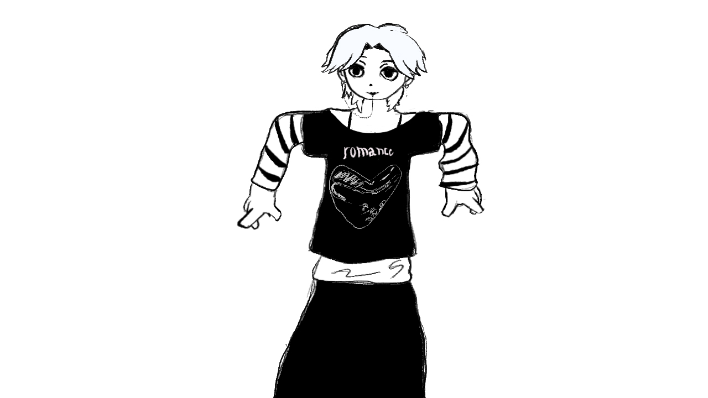

ENTRY 12.02.2025
Me
~ Glorious illustration ~

WHO GOES THERE ?!? oh its just me ^_^
Helloouu ~ ~ I have a couple names but online i usualy
use Hundegaard, and if you are reading this you are on my
website! I would like to both welcome you and thank you for looking around. This is the result of me
bingewatching videos on the indie web being very inspired (and slighly jelous). I briefly state on the homeplage that
this site is one part coding practice and one part creative outlet. Hopefully i can be as genuine as
possible on here without being choked to death by imposter syndrome. Who am i really? who knows, who
cares.
anyway here are some things i like and associate with <3
What do i do?
- I am currently studying applied computer science at a university in Oslo, Norway and i am in my second year.
- I am a hobbyist musician and i play different instruments, but i am most comfortable with the guitar as of now.
- I make an active effort to try and read more books, and track the one im currently reading on my hompage's status bar.
- I am trying my best to get out more in general and participate in more social activities, of which there seem to be plenty around me.
What do i like?
- My one end-all be-all diehard love will always be music
- Listening to it, playing it, talking about it, anything music related just hits me like nothing else.
- Books/Audiobooks
- Especially fantasy, alot of classics, and philosophy if i have the capacity that day.
- Passion
- I LOVE PASSION and passionate people, apathy is a plague and it is healed when we allow ourselves to be passionate and to be loved.
- Fashion
- clothing, jewelry, tatoos, piercings??? I love any and all forms of character customization and expression. I am violently drawn to people who have a strong sense of identity and desire to express themselves visually.
Dull
I used to be very detached from my emotions and i have been working on that for a while now. I now recognize that i did so because i was scared of others and myself. I was scared of being hurt. I am still scared of being hurt, but i am being more open and honest with myself and others. I am trying to be more genuine and I am trying to be more me. Silly as it may sound this website is a part of that effort. Thank you for reading, thank you for observing and judging me, thank you for scaring me <3